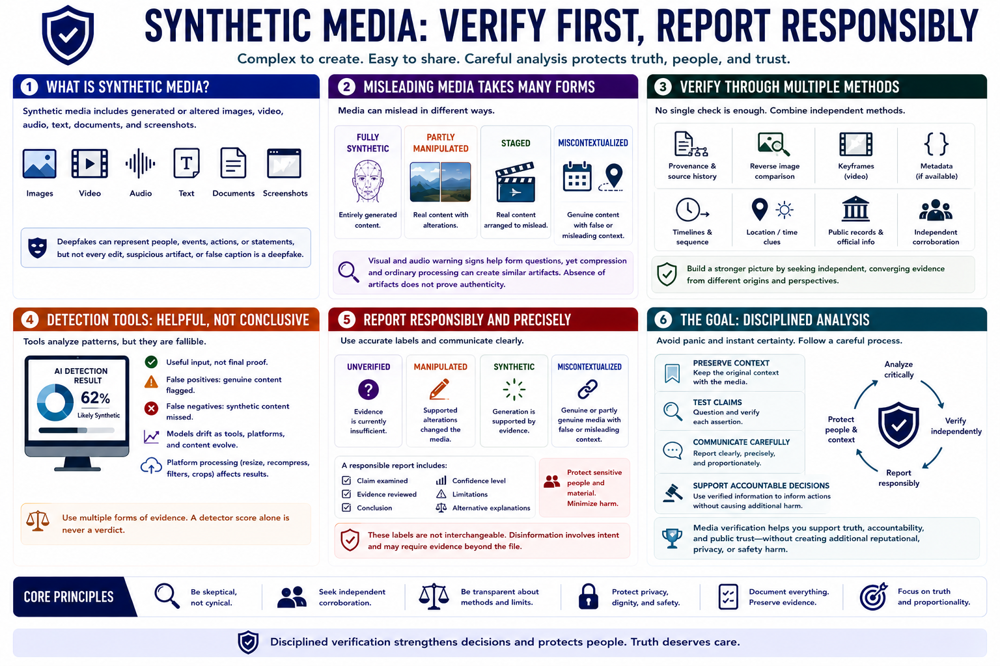

Course Summary and Key Takeaways
Connecting to LMS... Progress: in progress

Narration
Synthetic media includes generated or altered images, video, audio, text, documents, and screenshots. Deepfakes can represent people, events, actions, or statements, but not every edit, suspicious artifact, or false caption is a deepfake.
Misleading media can be fully synthetic, partly manipulated, staged, or genuine but miscontextualized. Visual and audio warning signs help form questions, yet compression and ordinary processing can create similar artifacts. Absence of artifacts does not prove authenticity.
Verification combines provenance, source history, reverse image comparison, keyframes, metadata, timelines, location or time clues, and independent corroboration. Detection tools remain one fallible input with false positives, false negatives, drift, and platform effects.
Responsible reporting distinguishes unverified, manipulated, synthetic, and miscontextualized content. It states evidence, confidence, limitations, and alternative explanations while protecting sensitive people and material.
The goal is disciplined analysis rather than panic or instant certainty. Preserve context, test claims, communicate carefully, and use media verification to support accountable decisions without creating additional reputational, privacy, or safety harm.